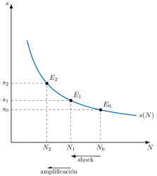
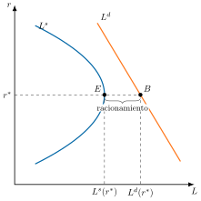
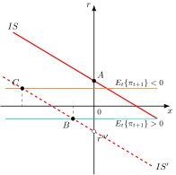
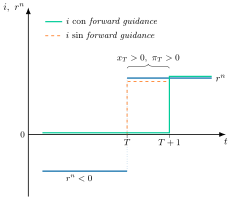

Apuntes para la oposición al Cuerpo de Diplomados Comerciales del Estado
7 Política monetaria (II): los mecanismos de transmisión de la política monetaria convencional y no convencional.
7.1 Introducción  1'
1'
Un banco central solo controla de forma directa un precio, el del dinero a muy corto plazo. Y, sin embargo, con ese único instrumento aspira a gobernar la inflación y a suavizar el ciclo de toda una economía. ¿Cómo llega una decisión tomada en una sala de reuniones al precio de una hipoteca, al empleo de una fábrica o a la inflación de dentro de dos años? La teoría monetaria lleva más de un siglo tratando de responderlo.
Para contestar conviene fijar antes los términos. La política monetaria es toda actuación de la autoridad monetaria sobre la cantidad o el precio del dinero para alcanzar sus objetivos, hoy sobre todo la estabilidad de precios. El mecanismo de transmisión es el proceso completo por el que una decisión del banco central llega al gasto, a la producción y a los precios. Cada una de las vías concretas que lo componen, como el tipo de interés, el crédito, el precio de los activos, el tipo de cambio o las expectativas, es un canal, y cada respuesta de los agentes dentro de un canal, como la sustitución intertemporal o la riqueza, es un efecto.1
Por consiguiente, el objetivo de la presente exposición será analizar cómo y por qué la política monetaria llega a la economía real, a través del siguiente esquema:
La evidencia empírica de que el dinero tiene efectos reales.
Los antecedentes teóricos, de la neutralidad del dinero a su no neutralidad.
Las rigideces de precios y el modelo neokeynesiano, que explican por qué los tiene.
Las rigideces de salarios y las fricciones financieras, que amplían ese modelo.
Los canales de transmisión convencionales.
Los mecanismos de transmisión no convencionales, desplegados cuando los tipos llegaron a su límite inferior.
7.2 La evidencia empírica: ¿tiene efectos reales el dinero? 1'
Antes de preguntarse cómo actúa la política monetaria, conviene comprobar si actúa. Friedman y Schwartz (1963), en su Historia monetaria de Estados Unidos, documentan que durante casi un siglo las variaciones de la oferta monetaria preceden a las del ciclo. Pero esa correlación no prueba causalidad, porque el propio banco central reacciona al estado de la economía.2
La técnica que se ha impuesto es la de los vectores autorregresivos (VAR), sistemas de ecuaciones en los que cada variable depende de sus propios retardos y de los de las demás.3 Christiano et al. (1999, 2005) definen el shock monetario como la desviación del tipo de interés respecto de la regla habitual del banco central y estiman cómo responde la economía a esa sorpresa. Tras una expansión no anticipada, el producto, el consumo y la inversión siguen una trayectoria en forma de joroba: alcanzan su máximo hacia el año y medio y vuelven a su nivel inicial en torno a los tres años. La inflación tarda unos dos años en alcanzar el suyo.4 La política monetaria se comporta, por tanto, como una política de demanda que mueve precios y cantidades en el mismo sentido, y lo hace con retraso.
Romer y Romer (1989, 2004) llegan al mismo resultado por otra vía: leen las actas de la Reserva Federal para aislar las decisiones que no responden al estado de la economía. Uno de esos episodios es el giro de Paul Volcker en octubre de 1979, que llevó los tipos por encima del 19 % y doblegó la inflación de dos dígitos al coste de una recesión profunda y un desempleo cercano al 11 %. Gertler y Karadi (2015) afinan aún más la identificación con el movimiento de los futuros sobre el tipo oficial en una ventana estrecha alrededor de cada anuncio.5
Jarociński y Karadi (2020) añaden un matiz importante: cada anuncio del banco central revela también lo que este sabe de la economía. Si tras una subida de tipos la bolsa cae, el mercado ha leído una sorpresa de política. Si sube, ha leído buenas noticias sobre la economía. Confundir ambos casos sesga la medición del efecto real de la política monetaria.6
La conclusión es contundente: a corto plazo, el dinero no es neutral.
7.3 Antecedentes: de la neutralidad a la no neutralidad 2'30"
Los datos muestran que el dinero importa a corto plazo. La teoría, sin embargo, tardó décadas en aceptarlo, y la pregunta de fondo ha sido siempre la misma: ¿por qué habría de tener efectos reales algo que, en principio, no es más que un velo sobre las transacciones?7
La teoría cuantitativa y la dicotomía clásica
La primera respuesta es la de la teoría cuantitativa. Fisher (1911) lee en clave causal la ecuación de cambio:
\[M\cdot V\equiv P\cdot T \tag{7.1}\]
donde la masa monetaria, \(M\), multiplicada por su velocidad de circulación, \(V\), iguala al nivel de precios, \(P\), multiplicado por el volumen de transacciones, \(T\). Con \(V\) estable y \(T\) fijado por la economía real, las variaciones de \(M\) solo alteran \(P\). El dinero es neutral, es decir, sus variaciones alteran las variables nominales pero no las reales, y la economía se estudia en dos compartimentos estancos, la dicotomía clásica.8
Keynes y los dos eslabones débiles
Keynes (1936) rompe esa dicotomía en la Teoría general. El tipo de interés se determina en el mercado de dinero y, a través de él, la política monetaria llega a la inversión y al producto. Pero Keynes señala dos eslabones débiles:
La trampa de la liquidez, cuando la demanda de dinero se vuelve extremadamente sensible al tipo de interés.9
La escasa respuesta de la inversión al tipo, frente a los animal spirits de los empresarios.
Por eso confía más en la política fiscal.
La síntesis neoclásica: IS-LM y curva de Phillips
La síntesis neoclásica formaliza ese debate en el modelo IS-LM de Hicks (1937) y le añade una teoría de los precios con la curva de Phillips (1958), que Samuelson y Solow (1960) leen como un menú de inflación y desempleo entre el que elegir.10 Dentro del IS-LM, la eficacia de la política monetaria depende de las pendientes de las curvas, y ahí se libra el debate entre keynesianos y monetaristas.
Gráficamente, en dos planos de tipo de interés, \(r\), y producción, \(Y\), como los de la Figura 7.1, se representan la curva IS, la LM inicial y la \(LM'\) tras una expansión monetaria. Así:
De \(E_{0}\) a \(E_{1}\), el efecto liquidez: el aumento de la oferta monetaria rebaja el tipo de interés a producción constante.
De \(E_{1}\) a \(E_{2}\), el efecto renta: el tipo más bajo estimula la inversión y la producción crece, a ese tipo, hasta cortar la IS.
De \(E_{2}\) a \(E_{3}\), el repunte del tipo: la mayor renta eleva la demanda de dinero, el tipo sube y desplaza parte de la inversión inducida. El nuevo equilibrio, \(E_{3}\), combina un tipo menor y una producción mayor que \(E_{0}\).
En la versión keynesiana, con una IS muy inclinada y una LM casi plana, la producción apenas aumenta. En la monetarista, con una IS plana y una LM muy inclinada, el aumento es grande.

Friedman y los monetaristas
Friedman (1968) da la vuelta al diagnóstico con la tasa natural de paro. Si la inflación, \(\pi\), depende de la esperada, \(\pi^{e}\), y de la distancia entre el desempleo, \(u\), y su tasa natural, \(u_{N}\), con una sensibilidad \(\varepsilon\),
\[\pi=\pi^{e}-\varepsilon\cdot(u-u_{N}) \tag{7.2}\]
solo la inflación no anticipada reduce el desempleo. Cuando las expectativas se ajustan, la curva de Phillips se vuelve vertical y el desempleo vuelve a su tasa natural. La estanflación de los años setenta, que ninguna curva estable predecía, le dio la razón. Como además no se sabe cuánto de un impulso monetario irá a precios y cuánto a producción, y sus efectos llegan con retardos largos y variables, rechaza el activismo y propone una regla de crecimiento constante de la masa monetaria.

Gráficamente, en dos planos de desempleo, \(u\), e inflación, \(\pi\), como los de la Figura 7.2, se representan la curva de Phillips de la síntesis, \(CP\), y las curvas a corto plazo de Friedman, \(CP_{0}\) y \(CP_{1}\), junto a la vertical a largo plazo, \(CP_{lp}\). Así:
En la versión de la síntesis, la economía puede pasar de \(A\) a \(B\): menos desempleo, \(u_{1}\), a cambio de más inflación, \(\pi_{1}\).
En la de Friedman, el paso de \(A\) a \(B\) solo dura mientras la inflación esperada siga en \(\pi^{e}_{0}\). Cuando los trabajadores la revisan, la curva a corto plazo se desplaza a \(CP_{1}\) y la economía vuelve a la tasa natural en \(C\), con más inflación.
A largo plazo la curva de Phillips es vertical: no hay intercambio entre inflación y desempleo.
La nueva macroeconomía clásica
La nueva macroeconomía clásica lleva el argumento al extremo con las expectativas racionales. En Lucas (1972), los productores viven en islas y solo observan el precio de su mercado. Ante una subida de su precio, \(p_{t}\), por encima del esperado, \(p^{e}_{t}\), no saben si es un cambio relativo o general, y la producción, \(y_{t}\), se separa de su nivel natural, \(y_{n}\), según la parte de la sorpresa que atribuyen a su propio mercado, \(\lambda\), y la elasticidad de la oferta, \(b\):
\[y_{t}=y_{n}+\lambda\cdot b\cdot(p_{t}-p^{e}_{t}) \tag{7.3}\]
Cuanto más volátil es la inflación, menor es \(\lambda\) y menos efecto tiene la política, como confirma Lucas (1973) con datos de varios países. Lucas (1976) generaliza la lección en su crítica: las relaciones estimadas en el pasado cambian cuando cambia la política, y no sirven para evaluar políticas nuevas. Sargent y Wallace (1976) concluyen que ninguna regla sistemática puede estabilizar el producto: es la proposición de irrelevancia (o de inefectividad) de la política.
Del dinero neutral a las rigideces
La respuesta que recorre toda esta discusión es que precios y salarios no se ajustan al instante. La cuestión pasa a ser entonces por qué no lo hacen y qué implica para la política monetaria, y eso es lo que formaliza el modelo neokeynesiano.
7.4 Rigideces de precios: el modelo neokeynesiano 3'30"
Por qué no se ajustan los precios
Rigidez nominal y rigidez real
Conviene distinguir dos tipos de rigidez:
Una rigidez nominal es la lentitud con la que se ajustan los precios o salarios fijados en dinero.
Una rigidez real es la resistencia de un precio relativo, como el salario real, a cambiar ante las perturbaciones.11
Costes de menú y cuasirracionalidad
¿Por qué no ajustan las empresas sus precios ante un shock monetario, si hacerlo les costaría tan poco? La respuesta de la nueva economía keynesiana es que precisamente no hacerlo les cuesta todavía menos. Mankiw (1985) muestra que, para una empresa con poder de mercado, un pequeño coste de menú basta para que no cambie su precio, porque la pérdida privada de no ajustarlo es de segundo orden, mientras que el coste social, en producción y empleo, es de primer orden. Akerlof y Yellen (1985) llegan a la misma conclusión con empresas casi racionales que siguen reglas sencillas.12
Fijación de precios a la Calvo
Calvo (1983) convierte esa rigidez en un supuesto manejable: en cada periodo, solo una fracción aleatoria de empresas puede revisar su precio.13 Si en cada periodo mantiene su precio una fracción \(\theta\) de empresas, un precio dura de media \(1/(1-\theta)\) periodos. Con el valor habitual de \(\theta=3/4\) en datos trimestrales, un año, cerca de lo que miden Nakamura y Steinsson.14
Las tres ecuaciones: IS dinámica, curva de Phillips neokeynesiana y regla de Taylor
Clarida et al. (1999), junto con el trabajo de Woodford (2003), sintetizan estas ideas en un modelo de equilibrio general dinámico y estocástico que combina la metodología de expectativas racionales de la nueva macroeconomía clásica con las rigideces nominales de la nueva economía keynesiana: competencia monopolística a la Dixit-Stiglitz (1977) y fijación de precios a la Calvo (1983).15
Dos conceptos clave
El sistema se resuelve en tres ecuaciones, que usan dos conceptos clave:
El output gap es la diferencia porcentual entre la producción y su nivel natural, el que habría con precios flexibles.
El tipo de interés natural es el tipo real que habría con precios flexibles, el que mantiene la producción en ese nivel.16
La IS dinámica
La IS dinámica, que se obtiene log-linealizando la ecuación de Euler del problema de consumo de los hogares, relaciona el output gap, \(x_{t}\), con la esperada para el periodo siguiente, \(E_{t}\left\{ x_{t+1}\right\}\), y con la diferencia entre el tipo de interés real, \(i_{t}-E_{t}\left\{ \pi_{t+1}\right\}\), y el natural, \(r^{n}_{t}\), ponderada por la elasticidad de sustitución intertemporal del consumo, \(1/\sigma\):
\[x_{t}=E_{t}\left\{ x_{t+1}\right\} -\frac{1}{\sigma}\cdot\left(i_{t}-E_{t}\left\{ \pi_{t+1}\right\} -r^{n}_{t}\right) \tag{7.4}\]
El output gap cae cuando el tipo real supera al natural y aumenta con las expectativas de output gap futuro.
La curva de Phillips neokeynesiana
La curva de Phillips neokeynesiana, bajo fijación de precios a la Calvo —donde solo una fracción de empresas ajusta precios cada periodo—, relaciona la inflación, \(\pi_{t}\), con la esperada, descontada por el factor \(\beta\), con el output gap, a través de un coeficiente \(\kappa\) que es menor cuanto más rígidos son los precios, y con perturbaciones de costes, \(u_{t}\):
\[\pi_{t}=\beta\cdot E_{t}\left\{ \pi_{t+1}\right\} +\kappa\cdot x_{t}+u_{t} \tag{7.5}\]
El output gap recoge aquí la desviación del coste marginal real respecto de su equilibrio, que es proporcional a él. Cuanto mayor es la rigidez, menor es \(\kappa\): la curva de Phillips es más plana, la inflación responde menos al output gap y la política monetaria mueve más el producto, aunque por eso mismo reducir la inflación cuesta más actividad.
La regla de Taylor
La regla de Taylor cierra el modelo: el banco central fija el tipo nominal, \(i_{t}\), a partir del tipo natural, de la inflación y de su desviación respecto del objetivo, \(\pi^{*}\), con pesos \(\phi_{\pi}\) y \(\phi_{x}\) sobre esa desviación y sobre el output gap:
\[i_{t}=r^{n}_{t}+\pi_{t}+\phi_{\pi}\cdot(\pi_{t}-\pi^{*})+\phi_{x}\cdot x_{t} \tag{7.6}\]
La condición clave es que el tipo nominal reaccione más que proporcionalmente ante la inflación —el principio de Taylor, que en esta especificación equivale a \(\phi_{\pi}>0\)— para evitar equilibrios múltiples.17 Esta prescripción, que Taylor (1993) contrastó con la conducta efectiva de la Reserva Federal, no es solo un artificio teórico: la Reserva Federal y el Banco Central Europeo la publican de forma habitual como uno de sus indicadores de referencia, y los analistas de mercado la usan de forma rutinaria para contrastar si el tipo de interés vigente está por encima o por debajo de lo que sugeriría la regla, dado el nivel de inflación y de output gap del momento.
El mecanismo de transmisión
El mecanismo de transmisión resultante es limpio: ante una subida de tipos nominales,
El tipo real se eleva por encima del natural.
Los hogares posponen consumo y el output gap cae.
Esa caída reduce el coste marginal y, vía la curva de Phillips, la inflación.
Críticas: expectativas y persistencia
Esa misma curva de Phillips neokeynesiana ha recibido, sin embargo, una crítica de peso, formulada por Ball (1994): al mirar hacia delante (forward-looking), predice que el anuncio creíble de una desinflación debería reducir la inflación esperada de inmediato y, con ella, generar una expansión del producto por el aumento de los saldos reales —justo lo contrario de lo que muestra la evidencia, que asocia las desinflaciones con recesión y desempleo elevado, como el propio episodio de Volcker. La respuesta habitual pasa por introducir indiciación con la inflación pasada o persistencia en los fundamentos del coste marginal, de modo que la inflación herede inercia de sus propios rezagos.
La versión híbrida de Galí y Gertler (1999) formaliza esa respuesta: una fracción de empresas fija su precio con una regla sencilla que mira a la inflación pasada, \(\pi_{t-1}\), de modo que la inflación depende de la esperada y de la pasada, con pesos \(\gamma_{f}\) y \(\gamma_{b}\):
\[\pi_{t}=\gamma_{f}\cdot E_{t}\left\{ \pi_{t+1}\right\} +\gamma_{b}\cdot\pi_{t-1}+\kappa\cdot x_{t}+u_{t} \tag{7.7}\]
Cuanto mayor es \(\gamma_{b}\), más inercia tiene la inflación y más actividad cuesta reducirla. Sus estimaciones dan un peso dominante a la parte que mira al futuro. Para la zona euro, Galí et al. (2001) encuentran incluso menos inercia que en Estados Unidos.18
La divina coincidencia
De aquí se deriva la “divina coincidencia”, nombre que le dan Blanchard y Galí (2007), aunque el resultado ya estaba en Goodfriend y King (1997) y en Rotemberg y Woodford (1997): si el banco central fija el tipo de interés de modo que el real replique al natural —una política neowickselliana—, estabiliza simultáneamente la inflación y el output gap, sin conflicto entre ambos objetivos, porque en ausencia de imperfecciones reales relevantes el nivel natural de producto ya es eficiente.19 La coincidencia se rompe en cuanto aparecen perturbaciones de costes, \(u_{t}\), que separan el producto natural del eficiente, como una subida de la energía cuando el salario real tarda en ajustarse: entonces estabilizar la inflación exige sacrificar producto, y viceversa. El shock energético de 2026, causado por el conflicto de Oriente Medio, es el ejemplo vivo.20
El régimen de inflation targeting que Nueva Zelanda inaugura en 1990, y que después adoptan el Reino Unido, Suecia o el propio Banco Central Europeo con su objetivo del dos por ciento, es la traducción práctica de esta idea: centrarse en un único objetivo de inflación creíble como forma de anclar también la actividad.
Esa credibilidad no es gratuita: Kydland y Prescott (1977) muestran que un banco central puede tener incentivos a sorprender con más inflación de la anunciada —por ejemplo, para reducir el desempleo una vez fijados los salarios nominales—, y que los agentes racionales, al anticiparlo, terminan por no creer ninguna promesa de baja inflación, el problema de la inconsistencia dinámica. Barro y Gordon (1983) muestran que una reputación construida en un juego repetido puede sostener la credibilidad sin necesidad de reglas rígidas; y Rogoff (1985) propone una solución institucional alternativa: delegar la política monetaria en un banco central independiente con una aversión a la inflación mayor que la de la sociedad en su conjunto, precisamente el diseño que adoptaron después la Reserva Federal y el Banco Central Europeo.
7.5 Rigideces de salarios y fricciones financieras 2'
Las rigideces de salarios
Contratos escalonados: Fischer y Taylor
La divina coincidencia resulta frágil en cuanto se mira al mercado de trabajo. Fischer (1977) responde a Sargent y Wallace mostrando que expectativas racionales y no neutralidad son compatibles si los salarios se fijan por contratos de dos periodos que se solapan. En cada periodo, la mitad de los salarios se firmó un periodo antes y la otra mitad, dos. El salario del periodo \(t\), \(W_{t}\), es entonces la media de lo que se esperaba en \(t-1\) y en \(t-2\) para el nivel de precios, \(P_{t}\):
\[W_{t}=\frac{1}{2}\cdot E_{t-1}\left\{ P_{t}\right\} +\frac{1}{2}\cdot E_{t-2}\left\{ P_{t}\right\} \tag{7.8}\]
El banco central puede reaccionar a lo que se sabe en \(t-1\), cuando la mitad de los salarios ya está fijada, y una expansión eleva los precios, reduce el salario real y expande el empleo aunque la política sea sistemática.21 Taylor (1980) mantiene el salario fijo durante todo el contrato y escalona los contratos entre sectores, de modo que cada convenio arrastra a los demás y la rigidez dura más que el propio contrato.22 La evidencia es parecida a la de los precios: los salarios se revisan, de media, una vez al año.23
Por qué son rígidos los salarios
Las razones de esa rigidez son reales, no solo nominales:
Los salarios de eficiencia, que llevan a la empresa a pagar por encima del salario de equilibrio para que despedir sea un castigo creíble (Shapiro y Stiglitz 1984).
Los contratos implícitos, que aseguran a trabajadores aversos al riesgo un salario estable (Azariadis 1975).
La negociación colectiva, que fija los salarios por convenio durante varios periodos.
El dilema de Blanchard y Galí
Blanchard y Galí (2007) muestran su consecuencia: con un salario real que se ajusta lentamente, el nivel natural de producto deja de ser eficiente y aparece un auténtico dilema entre inflación y output gap. Ante un shock adverso de oferta, lo óptimo es acomodarlo en parte y tolerar algo más de inflación. Es el debate que vivió el Banco Central Europeo en 2022 y vuelve a vivir en 2026 con el nuevo shock energético: subir tipos con contundencia para anclar expectativas o tolerar una inflación más persistente mientras los salarios reales se ajustan. En 2026 ha optado por subir: tras recortar hasta el 2 % en junio de 2025, elevó sus tipos 25 puntos básicos en junio y otros 25 en septiembre, hasta el 2,50 %.24
El acelerador financiero
Qué es el acelerador financiero
Los mercados financieros añaden una segunda fricción: el acelerador financiero de Bernanke y Gertler (1989), que Bernanke et al. (1999) integran después en un modelo cuantitativo del ciclo.25 El acelerador financiero es la amplificación de los shocks que se produce porque el coste de financiarse depende del patrimonio de quien pide prestado.26 Como los financiadores no pueden comprobar sin coste lo que rinden realmente los proyectos de una empresa, exigen una prima de financiación externa, la diferencia entre el coste de los fondos ajenos y el de los propios, creciente con su apalancamiento:
\[\text{Prima de financiaci{ó}n externa}=s\!\left(\frac{\text{Deuda}}{\text{Patrimonio neto}}\right),\qquad s'>0 \tag{7.9}\]
Cómo opera y la deuda-deflación
Ante una subida de tipos, la empresa afronta un coste de financiación mayor, una prima de financiación externa también mayor, y puede verse forzada a vender activos —con el riesgo de ventas forzosas simultáneas que hunden su precio—, en un círculo vicioso que amplifica el shock contractivo inicial. Si además la deuda está denominada en términos nominales, aparece el canal deuda-deflación: la caída de precios eleva el valor real de la deuda, incrementa el apalancamiento y retroalimenta el acelerador —una intuición que ya había formulado Fisher (1933), el mismo Fisher de la ecuación de cambio, al estudiar por qué las grandes depresiones se agravan cuando la deflación golpea a economías muy endeudadas.
La curva de la prima de financiación

Gráficamente, en un plano de patrimonio neto, \(N\), y prima de financiación externa, \(s\), como el de la Figura 7.3, se representa la curva \(s(N)\), decreciente porque cuanto más patrimonio tiene la empresa, menos riesgo soporta el prestamista. Así:
Una subida de tipos reduce el valor de los activos y el patrimonio pasa de \(N_{0}\) a \(N_{1}\): la prima sube de \(s_{0}\) a \(s_{1}\).
La prima más alta encarece la inversión, la actividad cae y el patrimonio vuelve a bajar, hasta \(N_{2}\): el shock se amplifica.
Como la curva es convexa, la amplificación es mayor cuanto más bajo es el patrimonio de partida, y por eso el acelerador pesa más en las recesiones y sobre las pymes.
La crisis de 2008
La crisis financiera global de 2008 es el ejemplo por excelencia: el desplome de las hipotecas subprime deterioró los balances bancarios, disparó la prima de financiación externa de empresas y familias y forzó ventas de activos que hundieron aún más su precio. No es casualidad que Ben Bernanke, coautor de esta teoría, presidiera entonces la Reserva Federal y aplicara medidas dirigidas explícitamente a frenar ese círculo vicioso.
Asimetría y huida hacia la calidad
El acelerador es además asimétrico: pesa más en las recesiones que en las expansiones y más sobre las pymes, con menos patrimonio y menos acceso a los mercados, que sobre las grandes empresas. Bernanke et al. (1996) lo llaman la huida hacia la calidad: al empezar una recesión, el crédito se retira primero de los prestatarios más débiles, que concentran por eso una parte desproporcionada de la caída de la actividad.27
Agentes heterogéneos
Las fricciones explican también por qué la política monetaria no llega a todos por igual. En el modelo de agentes heterogéneos de Kaplan et al. (2018), los efectos indirectos de un recorte de tipos, a través del empleo y la renta de los hogares, pesan mucho más que la sustitución intertemporal del modelo canónico.28 Por eso la transmisión es más intensa cuando abundan los hogares endeudados o sin liquidez, que gastan casi todo lo que ingresan.29
7.6 Los canales de transmisión convencionales 5'
El canal del tipo de interés
Los efectos sobre el gasto
Con las rigideces y las fricciones ya identificadas, se pueden recorrer los canales por los que un cambio del tipo oficial llega a la economía real. El primero es el del tipo de interés, que recoge la IS dinámica: como los precios no se ajustan al instante, una bajada del tipo nominal reduce el tipo real y estimula el gasto. El tipo de interés nominal es el que se pacta en dinero, y el real es el nominal menos la inflación esperada, es decir, el coste del crédito medido en bienes.30 En el consumo actúan tres efectos: el de sustitución, que abarata el consumo presente frente al futuro, el de renta, que depende de si el hogar es deudor o acreedor neto, y el de riqueza humana, porque un tipo más bajo eleva el valor presente de la renta futura, que es una forma de riqueza distinta de la de los activos.31
El coste de uso del capital
Sobre la inversión actúa además el coste de uso del capital: cuanto más bajo es el tipo de interés real, menor es el coste de financiar o de mantener inmovilizado el capital productivo, lo que empuja a las empresas a invertir hasta que la productividad marginal del capital iguala a ese coste de uso. Bernanke (1993) y Bernanke y Gertler (1995) son, sin embargo, escépticos de que este canal baste por sí solo para explicar la potencia de la política monetaria, porque los estudios empíricos apenas encuentran efectos del coste de uso del capital sobre la inversión.
El caso de España
Este canal fue especialmente potente en la subida de 2022 y 2023, porque en junio de 2023 alrededor del 68 % de las hipotecas vivas en España eran a tipo variable.32 El euríbor a doce meses pasó de \(-\)0,505 % en enero de 2021 a 4,160 % en octubre de 2023, estaba en el 2,172 % en septiembre de 2025 y ha vuelto al 3,247 % en septiembre de 2026. La subida llega en pocos meses a la cuota de millones de hogares, mucho más rápido que en Estados Unidos, donde predomina la hipoteca a tipo fijo a treinta años.33
El precio de los activos: efecto riqueza y q de Tobin
El efecto riqueza
El canal del precio de los activos actúa por dos efectos. El efecto riqueza es el aumento del consumo que provoca la revalorización de los activos de los hogares: un recorte de tipos revaloriza bonos, acciones y vivienda, y los hogares, más ricos, gastan más.34 En las empresas actúa la \(q\) de Tobin (1969), cociente entre el valor de mercado de la empresa y el coste de reposición de su capital:
\[q=\dfrac{\text{Valor de mercado de la empresa}}{\text{Coste de reposici{ó}n del capital}} \tag{7.10}\]
Cuando la bolsa sube, \(q\) aumenta y, si supera la unidad, conviene invertir en capital nuevo antes que comprar el ya existente.
El canal del crédito
El canal del préstamo bancario
El canal del crédito tiene dos vertientes. La más estrecha es el canal del préstamo bancario (bank lending channel), por el que la política monetaria altera la cantidad de crédito que los bancos están dispuestos a conceder, y que formalizan Bernanke y Blinder (1988) sobre la idea, ya subrayada por Blinder y Stiglitz (1983), de que el crédito importa por sí mismo y no solo el dinero: una expansión aumenta los depósitos bancarios y, con ellos, el crédito que los bancos pueden ofrecer. Stiglitz y Weiss (1981) explican por qué puede haber racionamiento: con selección adversa y riesgo moral, el rendimiento esperado del banco deja de crecer con el tipo de interés a partir de un umbral, de modo que el banco fija un tipo inferior al de vaciado y raciona el crédito. Una política expansiva desplaza hacia la derecha la oferta de préstamos y alivia ese racionamiento.
El racionamiento de Stiglitz y Weiss

Gráficamente, en un plano de crédito, \(L\), y tipo de interés del préstamo, \(r\), como el de la Figura 7.4, se representan la demanda de crédito, \(L^{d}\), y la oferta, \(L^{s}\), que se dobla hacia atrás a partir del tipo que maximiza el rendimiento esperado del banco, \(r^{*}\). Así:
Hasta \(r^{*}\), un tipo más alto eleva el rendimiento esperado del banco y la oferta de crédito.
Por encima de \(r^{*}\), la selección adversa y el riesgo moral reducen ese rendimiento, y la oferta cae.
El banco fija \(r^{*}\), en \(E\). A ese tipo la demanda, en \(B\), supera a la oferta, y el exceso se raciona.
Una expansión monetaria desplaza la oferta hacia la derecha y reduce el racionamiento.
El canal del balance
La vertiente más amplia es el canal del balance, por el que la política monetaria altera el patrimonio neto y el colateral de los prestatarios, y con ellos la prima que pagan por financiarse. Es el acelerador financiero visto desde la política monetaria: al revalorizar el colateral, una bajada de tipos amplía la capacidad de endeudamiento de las empresas, sobre todo de las pymes (Bernanke y Gertler 1995).
El crédito en los ciclos de 2008 y de 2022-2023
El credit crunch de 2008 y 2009 mostró su reverso: aunque el BCE inyectó liquidez masiva, la banca, con los balances dañados, restringió el crédito a las pymes.
El endurecimiento de 2022 y 2023 permite ver en acción la traslación de los tipos oficiales a los bancarios, es decir, la respuesta de los tipos que los bancos cobran por los préstamos y pagan por los depósitos a una variación del tipo del banco central. Es la puerta de entrada de los canales del tipo de interés y del crédito.35 El BCE subió sus tipos 450 puntos básicos en diez subidas, entre julio de 2022 y septiembre de 2023, y la banca trasladó el encarecimiento a sus clientes con un retardo de entre seis meses y un año. Hasta febrero de 2023, el tipo de los préstamos nuevos para vivienda había subido 2 puntos en España y el de los créditos a empresas, 2,3.36 El Banco de España subraya que el canal bancario es especialmente relevante en la UEM por el papel que desempeñan los bancos en la intermediación financiera.37
El canal del tipo de cambio
Efectos del tipo de cambio
El canal del tipo de cambio gana peso con la globalización financiera: una expansión reduce el tipo de interés, provoca salida de capitales y deprecia la moneda, con dos efectos contrapuestos —mayor competitividad-precio, que aumenta la demanda si se cumple la condición de Marshall-Lerner, y mayor coste de los bienes intermedios importados, que reduce la oferta agregada—, de saldo ambiguo. En economías con deuda en moneda extranjera se añade un efecto balance negativo por el descalce de monedas, como sufrieron varios países asiáticos endeudados en dólares durante la crisis de 1997. Corsetti y Pesenti (2005) añaden que, cuando la depreciación se traslada solo en parte a los precios, estabilizar únicamente el producto interior deja de ser óptimo: el banco central debe sopesar también los precios de importación.
El modelo Mundell-Fleming y los regímenes cambiarios
El modelo Mundell-Fleming (Mundell 1963; Fleming 1962) extiende el IS-LM a la economía abierta con una curva de balanza de pagos, \(BP\), y muestra que la eficacia de la política monetaria depende del régimen cambiario y de la movilidad del capital:
Con tipo de cambio flexible y perfecta movilidad de capitales, una expansión monetaria es eficaz: baja el tipo de interés, el capital sale, la moneda se deprecia y las exportaciones netas refuerzan el aumento de la producción.
Con tipo de cambio fijo y perfecta movilidad, es ineficaz: para sostener la paridad el banco central vende divisas y revierte la expansión de la base monetaria.
Con movilidad imperfecta se mantiene el resultado cualitativo, y con tipo flexible la eficacia crece con la movilidad del capital.
De ahí el trilema: libre movilidad de capitales, tipo de cambio estable y política monetaria autónoma no pueden coexistir. Un país del euro, sin moneda propia frente a sus socios, recibe su política monetaria del BCE y no puede usar el tipo de cambio dentro de la zona. Por eso, junto al tipo de cambio del euro frente al resto del mundo, cuenta para él el canal comercial.38
El canal comercial en España
En la España posterior a 2008, con la banca y las familias en pleno desapalancamiento, el canal que realmente funcionó no fue el interno sino el exterior: la política monetaria expansiva del Banco Central Europeo reactivó la demanda de los socios comerciales de la eurozona y, por esa vía, las exportaciones españolas, más que el crédito doméstico. El Banco de España lo llama canal comercial del área del euro: una política del BCE llega a la economía española también a través de la actividad de los demás países de la zona y, con ella, de las exportaciones.39
El canal de las expectativas
Por último, el canal de las expectativas es la vía por la que la política monetaria actúa al cambiar lo que los agentes esperan de los tipos, de la inflación y de la propia actuación futura del banco central, y su fuerza depende de la credibilidad de este.40 Mario Draghi lo ejemplificó en julio de 2012 con su célebre whatever it takes (Draghi 2012), tres palabras que, sin una sola compra inmediata de deuda, bastaron para frenar la prima de riesgo de los países periféricos del euro al disipar el temor a una ruptura de la moneda única.
Balance de los canales
Sumando todos los canales, el modelo trimestral del Banco de España estima que el endurecimiento de 2022 y 2023 restaría a la inflación española 0,5 puntos en 2023 y 0,6 en 2024 y 2025, y al crecimiento del PIB hasta 1,1 puntos en 2024. Es coherente con los retardos largos de la evidencia empírica: el efecto sobre el producto alcanza su máximo en 2024 y el de la inflación se mantiene en 2024 y 2025.41
El ciclo de 2026
El ciclo se ha repetido en 2026. Tras recortar el tipo de la facilidad de depósito hasta el 2,00 % en junio de 2025, el BCE lo ha vuelto a subir, hasta el 2,50 % en septiembre de 2026, ante un shock energético de oferta, con una inflación del 3,8 % en septiembre según la estimación rápida de Eurostat.42
7.7 Los mecanismos de transmisión no convencionales 4'30"
El límite inferior efectivo y la trampa deflacionista
Todos estos canales arrancan del tipo de interés a corto plazo. ¿Qué ocurre cuando ese tipo llega a su límite inferior? La crisis financiera de 2008 llevó los tipos de las principales economías a su límite inferior efectivo, la cota que impone la existencia de dinero en efectivo:
\[i_{t}\geq i^{\text{ELB}},\qquad i^{\text{ELB}}\leq0 \tag{7.11}\]
donde el límite inferior efectivo, \(i^{\text{ELB}}\), es nulo o ligeramente negativo, porque nadie aceptaría un retorno muy inferior a cero pudiendo atesorar billetes.43 La trampa de la liquidez es el caso en el que, con el tipo en ese límite, la demanda de dinero es tan elástica que el público guarda en efectivo cualquier dinero nuevo y la política monetaria convencional deja de estimular el gasto.44
Hoy, con el BCE en el 2,50 %, la Reserva Federal en el 3,75-4,00 % y el Banco de Japón en el 1,25 %, el límite parece lejano, pero los bancos centrales no lo han olvidado: la revisión de estrategia del BCE de 2025 mantiene en su caja de herramientas todos los instrumentos disponibles.45
La IS dinámica muestra por qué es un problema. Si el tipo natural, \(r^{n}_{t}\), se vuelve negativo, por ejemplo porque una crisis dispara el ahorro precautorio, el banco central necesitaría un tipo real negativo para cerrar el output gap. Con el tipo nominal en su límite, el tipo real depende solo de la inflación esperada. Si se espera deflación, el tipo real sube, el output gap se hace negativo y la curva de Phillips añade más deflación, que a su vez eleva el tipo real. Es la trampa deflacionista, versión moderna de la trampa de la liquidez de Keynes. Rachel y Summers (2019) añaden que el estancamiento secular, con exceso de ahorro y escasez de inversión, ha empujado el tipo natural hacia cero de forma duradera.

Gráficamente, en un plano de output gap, \(x\), y tipo de interés real, \(r\), como el de la Figura 7.5, se representan la IS dinámica, con output gap futuro nulo, antes y después del shock, \(IS\) e \(IS'\), y el suelo que el límite inferior impone al tipo real, \(r=i^{\text{ELB}}-E_{t}\left\{ \pi_{t+1}\right\}\), para dos niveles de inflación esperada. Así:
Antes del shock, el banco central iguala el tipo real al natural y el output gap es nulo, en \(A\).
Tras el shock, el tipo natural cae a \(r^{n\prime}<0\), pero el tipo real no puede bajar del suelo. La economía queda en \(B\), con un output gap negativo.
Si la recesión trae expectativas de deflación, el suelo del tipo real sube y la economía cae a \(C\), con un output gap aún mayor: es la trampa deflacionista.
Japón es el caso de estudio original. El estallido en 1990 de su burbuja bursátil e inmobiliaria, alimentada por una política monetaria muy laxa, inauguró la llamada década perdida. Desde 1999 el Banco de Japón mantuvo los tipos próximos a cero, y el país sufrió largos episodios de deflación pese a sucesivas rondas de estímulo. Krugman (1998) lo diagnosticó como una trampa de la liquidez. La salida ha llegado tarde: en marzo de 2024 el banco abandonó los tipos negativos y el control de la curva, y desde entonces ha subido los tipos hasta el 1,25 % de septiembre de 2026.46
El forward guidance
Si la forma de escapar de la trampa pasa por generar inflación esperada, el instrumento natural es actuar sobre las expectativas. La orientación de expectativas (forward guidance) es la comunicación del banco central sobre la senda futura de sus tipos. Puede limitarse a anunciar lo que prevé o comprometerse a mantener los tipos bajos más tiempo del que justificaría la situación, el llamado low for longer.47 Supóngase que el tipo natural vuelve a ser positivo en un periodo futuro, \(T\). Si el banco central promete no subir el tipo nominal hasta \(T+1\), en \(T\) el tipo real queda por debajo del natural y, suponiendo por sencillez que el límite inferior es cero, la IS dinámica y la curva de Phillips dan:
\[x_{T}=\frac{1}{\sigma}\cdot r^{n}_{T}>0,\qquad\pi_{T}=\kappa\cdot x_{T}>0 \tag{7.12}\]
Los agentes descuentan esa inflación futura y el tipo real esperado cae ya hoy. El problema es de credibilidad: el banco central debe comprometerse a ser irresponsable, justo lo contrario de la reputación antiinflacionista que ha cultivado durante décadas.48 Puede hacerlo por calendario, con una fecha, o por estado, con umbrales de inflación o de desempleo. Del Negro et al. (2012) advierten, sin embargo, de que los modelos sobrestiman mucho su efecto, el llamado forward guidance puzzle.49 En 2026 la orientación se ha debilitado: el presidente de la Reserva Federal declaró en septiembre “My business is to not give forward guidance”.50

Gráficamente, en un plano de tiempo, \(t\), y tipos de interés, como el de la Figura 7.6, se representan el tipo natural, \(r^{n}\), y la senda del tipo nominal, \(i\), con y sin forward guidance. Así:
Hasta \(T\) el tipo natural es negativo y el nominal está en su límite inferior.
Sin forward guidance, el banco central sube el tipo en \(T\), en cuanto el natural vuelve a ser positivo.
Con forward guidance, lo mantiene en cero hasta \(T+1\). En \(T\) el tipo real queda por debajo del natural, el output gap y la inflación son positivos, y su anticipación rebaja ya hoy el tipo real esperado.
El price-level o average inflation targeting, adoptado por la Reserva Federal en 2020 y abandonado en agosto de 2025, compensaba periodos de inflación baja con periodos de inflación por encima del objetivo para anclar mejor las expectativas.
Las compras de activos
El forward guidance se ha acompañado de la expansión cuantitativa (quantitative easing), la compra masiva de activos a largo plazo, sobre todo deuda pública, financiada con reservas, que aumenta el tamaño del balance del banco central. La desplegaron la Reserva Federal, el Banco de Inglaterra, el Banco de Japón y el BCE, este con su programa de compras de activos (APP), iniciado a finales de 2014 con cédulas hipotecarias y titulizaciones y ampliado a la deuda pública en 2015, y el programa de compras de emergencia frente a la pandemia (PEPP), anunciado en marzo de 2020 con 750.000 millones de euros y ampliado hasta 1,85 billones.51 Su objetivo es bajar los tipos a largo plazo cuando el corto ya está agotado.
Sobre su eficacia pesa un debate que Wallace (1981) había abierto ya: en mercados financieros perfectos, el tamaño y la composición del balance del banco central son irrelevantes, un teorema de Modigliani-Miller para las operaciones de mercado abierto, porque comprar deuda pública a largo plazo solo cambia la madurez de la deuda agregada. La experiencia posterior a 2008, con una Reserva Federal que pasó de unos 0,9 billones de dólares de balance en 2007 a 4,5 billones a finales de 2014, mostró que multiplicar las reservas no genera inflación por sí solo, en parte porque las reservas remuneradas se comportan casi como deuda a corto plazo.52 Pero con fricciones financieras el resultado se debilita, y la literatura identifica tres canales por los que las compras sí tienen efectos reales:
El hábitat preferente (Chen et al. 2012): si fondos de pensiones y aseguradoras solo pueden invertir en ciertos plazos, las compras del banco central en esos plazos suben su precio y bajan su rentabilidad.
Las fricciones bancarias (Gertler y Karadi 2011): los bancos están sujetos a un límite de apalancamiento, de modo que cuando ese límite aprieta, como ocurre en una crisis financiera, la compra de activos a largo plazo por parte del banco central libera capacidad de balance a los bancos privados.
La señal (Bhattarai et al. 2015): al llenar su balance de bonos largos, el banco central perdería dinero si subiera pronto los tipos, y eso hace creíble su promesa de mantenerlos bajos. Woodford (2012) concluye que buena parte del efecto de las compras de la Reserva Federal llegó por canales de expectativas, por lo que anunciaban sobre la senda futura de tipos, más que por un efecto de cartera.53
La evidencia para la zona euro apunta a efectos relevantes. Rostagno et al. (2021) estiman que el QE comprimió el rendimiento medio de la deuda soberana a diez años en torno a 150 puntos básicos hasta finales de 2019. Los servicios técnicos del BCE calculan que el conjunto de medidas no convencionales añadió en torno a 0,6 puntos al crecimiento anual del PIB y 0,4 a la inflación entre 2015 y 2020.54
El propio anuncio en 2013 de que la Reserva Federal empezaría a reducir sus compras, el llamado taper tantrum, provocó un repunte brusco de los tipos a largo plazo y una salida de capitales de los mercados emergentes, prueba de que los anuncios sobre las compras, al cambiar lo que se espera del balance y de la senda de tipos, mueven precios de activos y tipos de cambio. El rendimiento del bono estadounidense a diez años pasó del 1,66 % el 1 de mayo al 2,98 % el 5 de septiembre de 2013.55
Otros instrumentos y el riesgo del balance
Los instrumentos
Los bancos centrales han recurrido además a otros instrumentos:
Los tipos negativos, que aplicaron el BCE desde 2014 hasta julio de 2022, el Banco Nacional Suizo y el Riksbank sueco desde 2015 y el Banco de Japón de 2016 a marzo de 2024, se transmiten sobre todo por el canal bancario: cobran a los bancos por la liquidez ociosa y los empujan a prestar, aunque estrechan su margen.
Las operaciones de financiación a plazo más largo con objetivo específico (TLTRO), que el BCE anunció en junio de 2014, marzo de 2016 y marzo de 2019, actúan sobre el mismo canal: dan liquidez barata a varios años a condición de que los bancos la presten a empresas y hogares. Estas operaciones y las compras de deuda corporativa son expansión crediticia (credit easing): buscan abaratar el crédito de segmentos concretos de la economía, más que bajar los tipos largos del conjunto, y por eso se fijan más en qué activos se compran o se financian que en cuántos.
El control de la curva de tipos, que el Banco de Japón aplicó de 2016 a marzo de 2024, fijaba directamente un objetivo para el bono a diez años.
Desde julio de 2022, el instrumento para la protección de la transmisión (TPI) permite al BCE comprar deuda de los países en los que las tensiones de mercado amenacen la transmisión, para que la política monetaria llegue por igual a toda la zona.56
El riesgo del balance
Todos estos instrumentos tienen un coste común, unos balances de tamaño sin precedentes. Cuando los tipos suben, el banco central paga por las reservas mucho más de lo que rinden unos bonos comprados a tipos muy bajos, y puede incurrir en pérdidas que reducen sus transferencias al Tesoro. El valor de mercado de esos bonos también cae, pero no se contabiliza como pérdida mientras se mantengan hasta su vencimiento.57 Las pérdidas llegaron con las subidas de 2022: el BCE registró pérdidas de 1.266 millones de euros en 2023, después de liberar provisiones, y de 7.944 millones en 2024.58 En 2025 volvió a perder 1.254 millones y prevé volver a beneficios en 2026 o 2027.59
La estrategia de salida
De ahí la última pregunta de esta política, la estrategia de salida: cómo reducir el balance sin provocar otro taper tantrum. El BCE la ha abordado en varias etapas, que incluyen el ciclo de tipos que la acompañó:
De julio de 2022 a septiembre de 2023, diez subidas, de \(-\)0,50 % a 4,00 %.
De marzo de 2023 a finales de 2024, el fin de las reinversiones: primero parte del APP, desde julio de 2023 todo el APP y a finales de 2024 el PEPP.
De junio de 2024 a junio de 2025, ocho recortes, hasta el 2,00 %.
En 2026, dos subidas de 25 puntos básicos, en junio y en septiembre, hasta el 2,50 %, ante el shock energético.
En el máximo de 2022, el Eurosistema llegó a tener activos de política monetaria por un valor en torno al 56 % del PIB de la zona euro.60 La reducción es pasiva, a un ritmo “mesurado y predecible”, que deja vencer los bonos sin venderlos para no tensionar los mercados.61 A finales de septiembre de 2026, el APP sumaba 2,06 billones de euros a coste amortizado, y el 2 de octubre el PEPP, 1,28 billones, también a coste amortizado.62
Otros bancos centrales
Los demás grandes bancos centrales siguen caminos distintos:
La Reserva Federal puso fin a su endurecimiento cuantitativo el 1 de diciembre de 2025, y su balance es de 6,75 billones de dólares.63
El Banco de Japón reduce de forma gradual sus compras mensuales de bonos y, desde abril de 2027, las mantendrá en unos 2 billones de yenes.64
El Banco de Inglaterra mantiene su tipo oficial en el 3,75 %, con tres votos a favor de subirlo a 4 % en septiembre de 2026.65
La salida demuestra que la transmisión no convencional es asimétrica: entrar en el balance es rápido, pero salir lleva años, y el shock energético de 2026 obliga a subir tipos con el balance todavía grande.
Otra vía, más discutida todavía, retoma una vieja parábola de Friedman: en (1969), para explicar de forma didáctica los efectos de una expansión monetaria, imaginó un helicóptero que sobrevolara una comunidad repartiendo billetes de forma gratuita y no repetible. Bernanke (2002) recuperó la idea, ya como gobernador de la Reserva Federal, al advertir que un banco central siempre puede evitar la deflación financiando directamente una transferencia fiscal con dinero nuevo —de ahí el apodo de Helicopter Ben que arrastró después—, y Turner (2015) la defendió como una herramienta seria, y no solo un recurso retórico, para cuando la política monetaria convencional se agota.
La propuesta sigue siendo minoritaria entre los propios banqueros centrales. Issing (2016), primer economista jefe del Banco Central Europeo, la calificó de alarmante y sencillamente devastadora, por constituir a su juicio una declaración de quiebra de la política monetaria: si el banco central pasa a financiar transferencias directas, la frontera que lo separa del poder fiscal —la misma que separa la dominancia monetaria de la dominancia fiscal— deja de ser reconocible.
7.8 Conclusiones  30"
30"
Como conclusión, la política monetaria tiene efectos reales porque precios y salarios no se ajustan al instante y porque los mercados financieros no son perfectos, y esas mismas fricciones dibujan los canales por los que se transmite. Cuando el tipo de interés tocó su límite, los bancos centrales no inventaron otra transmisión: buscaron otras palancas para mover los mismos canales.
Las crisis recientes la han confirmado y, a la vez, le han abierto nuevos frentes:
Las subidas de 2022 y 2023 mostraron la potencia del canal bancario en un país de hipotecas variables como España, y también sus retardos. Las de 2026 plantean otra pregunta: ¿cuánto debe subir un banco central ante un shock energético de oferta?
Con hogares heterogéneos, mover los tipos redistribuye renta entre deudores y acreedores. ¿Debe el banco central tenerlo en cuenta?
Una sola política monetaria tiene que llegar por igual a veintiuna economías distintas, y de ahí el canal comercial del área del euro y el TPI.
Cada anuncio del banco central dice algo sobre la política y algo sobre la economía, de modo que gestionar las expectativas es hoy un instrumento en sí mismo.
Queda, en fin, una pregunta para el tribunal: ¿es la política monetaria todavía el estabilizador principal, o necesita ya el apoyo permanente de la política fiscal?
Apéndice
7.A.1. Las escuelas de pensamiento ante la no neutralidad del dinero
La evidencia empírica en detalle
El problema de la causalidad se resuelve solo parcialmente cuando Sims (1972) aplica regresiones con retardos y adelantos del dinero y el concepto de causalidad de Granger: el dinero ayuda a predecir el producto futuro, pero el producto no ayuda a predecir el dinero futuro.
La técnica que ha terminado por consolidarse es la identificación de shocks mediante vectores autorregresivos. Christiano et al. (2005) definen el shock monetario como la desviación del tipo de interés respecto de la regla que sigue habitualmente el banco central, y estiman las funciones impulso-respuesta de la economía ante esa sorpresa —una agenda que ellos mismos habían sistematizado en Christiano et al. (1999). El resultado es robusto para distintos periodos y países: una subida no anticipada del tipo de interés reduce la cantidad de dinero y provoca caídas progresivas en el nivel de precios y en el producto. Es decir, la política monetaria se comporta como una política de demanda, porque desplaza precios y cantidades en el mismo sentido.
Romer y Romer (2004) atacan el problema de la identificación por otra vía: leen las actas de las reuniones del banco central y las previsiones que se manejaban antes de cada una para aislar los cambios de tipos que no responden al estado de la economía. Los resultados son cualitativamente los mismos que con los VAR, con la ventaja de esquivar la subjetividad de ordenar las variables, aunque a costa de la subjetividad de interpretar las propias actas. Gertler y Karadi (2015) refinan aún más la identificación al aproximar la sorpresa de política monetaria por el movimiento de los futuros sobre el tipo de los fondos federales en una ventana muy estrecha alrededor de cada anuncio del banco central, con lo que reducen la posibilidad de que ese movimiento recoja algo distinto de la sorpresa misma.
El experimento más elocuente, sin embargo, es histórico. Velde (2009) estudia la Francia de 1724: la corona, que podía fijar a voluntad el valor facial de sus monedas de oro y plata, recortó ese valor en un 45 %, en tres reducciones sucesivas en 1724, de forma sorpresiva y bien publicitada. El resultado fue una caída progresiva de los precios durante dos años acompañada de una recesión severa, especialmente en el sector textil. La reversión parcial de la medida en 1726 invirtió ambos efectos. Es, en esencia, un experimento controlado de contracción monetaria tres siglos antes de que existieran los VAR.
Fisher y la teoría cuantitativa del dinero (1911)
La primera respuesta teórica es anterior a esa evidencia y viene de la escuela neoclásica. Fisher (1911), en El poder adquisitivo del dinero, reinterpreta en clave causal la ecuación de cambio, una identidad contable que da forma algebraica a la vieja teoría cuantitativa de Hume (1752):
\[M\cdot V\equiv P\cdot T \tag{7.13}\]
donde la masa monetaria, \(M\), es exógena, la velocidad de circulación, \(V\), es estable por factores institucionales, \(P\) es el nivel de precios y el volumen de transacciones, \(T\), ligado al producto real, viene dado por una oferta agregada vertical. La causalidad va de la masa monetaria a los precios: la inflación es un fenómeno monetario, el dinero es neutral y la economía se estudia en dos compartimentos estancos, la dicotomía clásica.
Su implicación de política es que no hay margen para la estabilización activa: como mucho, evitar que el propio banco central perturbe los precios. El caso más nítido que confirma esta lectura son las hiperinflaciones —la Alemania de Weimar en 1923, o Venezuela y Zimbabue ya en el siglo XXI—, donde emisiones masivas de dinero se trasladan a precios prácticamente uno a uno, sin ganancia duradera de producto ni empleo.
La escuela austríaca: una disidencia contemporánea a Fisher
Frente a esa neutralidad, una tradición minoritaria pero persistente niega la premisa de partida. Ya Cantillon (1755), en un ensayo escrito hacia 1730 que no vio la imprenta hasta un cuarto de siglo después, había observado que una entrada de dinero nuevo en la economía no se reparte simultáneamente entre todos los agentes: quien lo recibe primero —en su ejemplo, el dueño de una mina de plata— gasta antes de que suban los precios, mientras quien lo recibe último ya paga más caro con una renta que no ha variado. Es el llamado efecto Cantillon: la política monetaria altera los precios relativos y la distribución de la renta antes de que se complete cualquier ajuste general del nivel de precios, de modo que el dinero no es neutral durante el ajuste y, como ese reparto no se deshace del todo, para esta tradición tampoco lo es a largo plazo.
Mises (1912) y Hayek (1931) retoman esa intuición para construir la teoría austríaca del ciclo económico. Si el banco central mantiene el tipo de interés por debajo del tipo natural —el que igualaría ahorro e inversión—, las empresas emprenden proyectos de inversión que solo parecen rentables por ese abaratamiento artificial del crédito. Cuando la expansión monetaria se frena, esos proyectos se revelan como malas inversiones y la corrección —la recesión— es tanto más severa cuanto más se haya prolongado el auge previo. De ahí su conclusión de política, tan extrema como coherente con sus propias premisas: cualquier intento de suavizar la recesión con más estímulo monetario solo aplaza y agrava el ajuste, prescripción conocida como liquidacionismo y que muy pocos bancos centrales han seguido en la práctica.66
Keynes y la ruptura de la dicotomía clásica (1936)
¿Es siempre neutral el dinero, tal y como sugiere la teoría cuantitativa? Keynes (1936), en la Teoría general, sostiene que no y rompe con la dicotomía. Para él, los tipos de interés se determinan en el mercado de dinero, por la preferencia por la liquidez, y no por la igualdad entre ahorro e inversión, como sostenía la teoría clásica, y se transmiten a lo largo de toda la curva de rendimientos, lo que afecta a la inversión.
Sin embargo, señala dos eslabones débiles: la trampa de la liquidez, cuando la demanda de dinero es muy sensible al tipo de interés, y la escasa sensibilidad de la inversión al tipo, dominada por los animal spirits. De ahí su desconfianza hacia la política monetaria y su preferencia por la fiscal. La propia Gran Depresión estadounidense de los años treinta, con tipos de interés próximos a cero y una economía que seguía sin repuntar, se leyó durante décadas como el episodio de referencia de esa trampa de liquidez.
La síntesis neoclásica: IS-LM y la curva de Phillips (1937-1960)
En los años posteriores a la Teoría general, Hicks (1937) formaliza esas ideas en el modelo IS-LM, que Hansen y Modigliani desarrollarán después: con precios rígidos, una expansión monetaria desplaza la LM hacia abajo, reduce el tipo de interés y aumenta la renta. Su efectividad depende de las elasticidades, mínima en el subsistema keynesiano de IS inelástica y LM plana, máxima en el caso contrario.
A esta síntesis se suma un hallazgo empírico de 1958: Phillips (1958) documenta una relación negativa entre inflación salarial y desempleo en el Reino Unido que Samuelson y Solow (1960) reinterpretan como un menú de política económica explotable, lo que abrió la puerta a la estabilización activa del ciclo mediante inflación moderada y sostenida. Este fue precisamente el espíritu del fine-tuning practicado por las administraciones Kennedy y Johnson en Estados Unidos a mediados de los sesenta, calibrando el gasto y el dinero para mantener el desempleo bajo a cambio de algo más de inflación.
Friedman y los monetaristas (1968 en adelante)
Ese menú queda desmentido, sin embargo, por la estanflación de los años setenta, que ninguna curva de Phillips estable predecía, y da paso a Friedman y a los monetaristas, con la consigna money matters. Ya en su discurso presidencial ante la American Economic Association, publicado en 1968, Friedman (1968) formula la tasa natural de paro para explicar por qué el trade-off desaparece cuando los trabajadores incorporan sus expectativas de inflación en una curva de Phillips ampliada:
\[\pi=\pi^{e}-\varepsilon\cdot(u-u_{N}) \tag{7.14}\]
donde solo la inflación no anticipada reduce el desempleo por debajo de su tasa natural. Identifica además otros dos canales: el tipo de interés, más potente que para Keynes porque concibe más activos sustitutivos del dinero, y el efecto riqueza, con raíz en la renta permanente.
Pese a reconocer efectos reales a corto plazo, rechaza el activismo por tres razones —la ecuación perdida del monetarismo, los retardos, que estima en dieciocho meses, y la inefectividad a largo plazo— y propone una regla de crecimiento constante de la oferta monetaria.
La aplicación práctica más conocida de estas ideas es el experimento monetarista de Paul Volcker al frente de la Reserva Federal entre 1979 y 1982: fijó como objetivo intermedio el crecimiento de los agregados monetarios en lugar del tipo de interés, dejó que este subiera por encima del 19 %, y logró doblegar la inflación de doble dígito heredada de los setenta al coste de una recesión profunda y un desempleo cercano al 11 %.
La nueva macroeconomía clásica: Lucas, Sargent y Wallace (1972-1976)
¿Puede el banco central explotar de forma sistemática esa relación entre inflación y desempleo? La revolución de las expectativas racionales, en los años setenta, niega esa posibilidad y lleva al extremo el argumento monetarista. Lucas (1972) modeliza agentes distribuidos en islas con información imperfecta, que solo observan el precio de su propio mercado y atribuyen a su propio mercado una fracción \(\lambda\) de cualquier sorpresa en el precio. Con \(b\) como elasticidad de la oferta, la oferta agregada resultante es
\[y_{t}=y_{n}+\lambda\cdot b\cdot(p_{t}-p^{e}_{t}) \tag{7.15}\]
Solo la inflación no anticipada mueve el producto, y solo transitoriamente. Si los shocks nominales son muy variables, \(\lambda\) cae y la política monetaria pierde potencia, germen de la crítica de Lucas (1976) a las relaciones estadísticas no estructurales. La evidencia internacional de Lucas (1973) —países con inflación más volátil presentan curvas de oferta más verticales— respalda empíricamente ese mecanismo.
Sargent y Wallace (1976) llevan la lógica a su extremo con precios flexibles y expectativas racionales: ninguna regla sistemática puede explotar la curva de Phillips ni siquiera un periodo, la proposición de irrelevancia (o de inefectividad) de la política. La implicación es fuerte: solo importa la credibilidad y la sorpresa, nunca la regla anunciada.
Sargent aplicó después esta lógica a la historia: en su estudio de (1982) sobre el fin de cuatro grandes hiperinflaciones europeas de entreguerras —Austria, Hungría, Polonia y Alemania—, muestra que una reforma monetaria y fiscal suficientemente creíble puede cortar la inflación casi de golpe y con un coste en producto mucho menor del que predecía la curva de Phillips tradicional, precisamente porque transforma de inmediato las expectativas de los agentes.
7.A.2. La explicación de la Gran Depresión desde la política monetaria
Existen dos grandes lecturas monetarias de la Gran Depresión. La explicación monetarista de Friedman y Schwartz (1963) sostiene que la “Gran Contracción” se debió a la caída de la oferta de dinero —que se redujo en más de un tercio entre 1929 y 1933—: la Reserva Federal no reaccionó ante las quiebras bancarias y la demanda de dinero insatisfecha se tradujo en contracción del gasto, la producción y el empleo, al no ser los precios suficientemente flexibles a la baja. El fallo no fue causar la crisis, sino no adoptar las medidas correctoras.
La explicación austríaca, en cambio, atribuye la depresión a la política de “crédito fácil” de la Reserva Federal en los años veinte, que habría alimentado una expansión insostenible de los precios de los activos y del capital. Cuando el banco central endureció la política, ya con retraso, en 1928, la contracción era inevitable, y la intervención posterior al crac de 1929 solo habría retrasado el ajuste de los mercados. Sus fundamentos teóricos se resumen en el Apéndice 7.A.1.
7.A.3. El tamaño del balance del banco central y su solvencia
Una vez superada la crisis, ¿debe el banco central volver al balance que tenía antes de las compras masivas o convivir con uno mucho mayor? A favor de reducirlo se suelen dar tres argumentos. Un balance grande aplana la curva de tipos y le resta valor como señal de las expectativas del mercado. Aumenta el riesgo patrimonial del banco central, sobre todo cuando el plazo de sus activos supera con mucho al de sus pasivos. Y desliga el balance de la demanda genuina de efectivo y de reservas del sistema.
A favor de mantenerlo grande se señala que reduce la volatilidad de los tipos a corto plazo, que ofrece al sector privado activos líquidos y seguros que favorecen la estabilidad financiera y que deja más margen frente al límite inferior en una crisis futura. Schnabel (2023) advierte, en este sentido, de que la escasez de reservas puede tensionar el funcionamiento de los mercados.67
El debate sobre el tamaño tiene un paralelo en la composición. Acortar el plazo de la cartera reduce el riesgo de tipo de interés, a costa de renunciar a parte del efecto sobre los tipos a largo plazo. En cuanto al tipo de activo, lo habitual es que el balance esté formado sobre todo por deuda pública y que los activos privados se reserven para episodios de tensión, cuando su compra es más eficaz.
¿Puede quebrar un banco central? La contabilidad convencional es engañosa, porque omite su principal activo: el valor presente de sus ingresos futuros por señoreaje. Ese activo tiene un límite, porque emitir más dinero genera inflación y erosiona su valor real, la misma lógica de la curva de Laffer aplicada al impuesto inflacionario. Reis (2015) muestra que medir esa solvencia intertemporal es difícil, y que, si el banco central transfiere al Tesoro sus resultados, positivos o negativos, no puede quebrar por sí solo, al margen del Tesoro. Del Negro y Sims (2015) concluyen que un banco central con un balance grande de activos a largo plazo debe poder contar con el apoyo del Tesoro, porque sin él podría peligrar su capacidad de controlar la inflación.68 Las pérdidas del BCE en 2023 y 2024 muestran que la pregunta no es retórica.
7.A.4. El efecto de los programas de compra de activos del BCE en las cuentas públicas de España
El Documento Ocasional n.º 2409 del Banco de España, de Aguilar, Alloza, Costain, Hurtado y Martínez-Martín (2024), titulado El efecto de los programas de compras de activos del Banco Central Europeo en las cuentas públicas de España, analiza cómo el Asset Purchase Programme (APP), iniciado a finales de 2014 y ampliado en 2015, y el Pandemic Emergency Purchase Programme (PEPP), lanzado en 2020, afectaron a las cuentas públicas españolas entre 2015 y 2022. Ambos programas buscaban estimular la economía del área del euro reduciendo los tipos de interés.
Metodológicamente, un modelo de curva de tipos descompone el efecto de las compras sobre los rendimientos en tres canales:
La señalización, que informa de la senda futura de los tipos oficiales.
La extracción de riesgo de duración, porque el banco central absorbe parte de ese riesgo del mercado.
La extracción de riesgo de impago.
Después, el modelo macroeconómico del Banco de España (MTBE) traslada esa caída de los rendimientos a los ingresos, el gasto, el déficit y la deuda. El documento ofrece un intervalo según dos calibraciones, de elasticidad baja y alta. Los hallazgos son:
Los anuncios de compras de deuda española entre 2015 y 2020, por 481.000 millones de euros, redujeron el rendimiento a diez años en 216 puntos básicos con elasticidad baja y en 381 con elasticidad alta (p. 16).
Con expectativas racionales, los programas redujeron la deuda pública de 2022 en 77.700-130.900 millones de euros, un 5,9-9,9 % del PIB (p. 20).
La ratio de deuda sobre PIB habría sido entre 13,3 y 21,3 puntos porcentuales mayor sin los programas, porque estos también afectaron al denominador (p. 20).
Con expectativas adaptativas o consistentes, la reducción de la ratio baja a entre 5 y 11,4 puntos porcentuales (p. 21).
Entre 2015 y 2022, los ingresos públicos acumulan 167.200-286.600 millones de euros más, los intereses 35.500-57.500 millones menos y el saldo presupuestario mejora en 77.700-130.900 millones (tabla 2, p. 25).
El propio documento advierte de que las partidas individuales de ingresos y gastos están sujetas a mayor incertidumbre, de modo que las variables principales, déficit y deuda, son más robustas que cada partida por separado (p. 22). La lección es que la política monetaria no convencional tuvo efectos fiscales relevantes, aunque su cuantificación depende del modelo y de la formación de expectativas.
7.A.5. Limitaciones de la política monetaria
Conviene repasar también las limitaciones de la política monetaria, que pueden agruparse en generales y específicas. Entre las generales —comunes a cualquier instrumento de estabilización—: la incertidumbre (el banco central conoce imperfectamente los mecanismos de transmisión), los retardos (internos de reconocimiento y acción, y externos de hasta año y medio, que pueden volver procíclica una política diseñada como anticíclica), las expectativas racionales (solo la política no anticipada tiene efectos reales) y la globalización, que ata los tipos internos a los internacionales.
Entre las específicas: la inconsistencia dinámica (con sus soluciones de reglas, reputación y delegación). La asimetría o “teorema de la cuerda” —la política restrictiva es más eficaz que la expansiva, pues se puede tirar de la cuerda pero no empujarla, como mostró la primera “barra libre de liquidez” del BCE—. Los límites institucionales de las subidas de tipos (coste de la deuda, efectos distributivos, freno al crecimiento, dificultad de financiación de las pymes). La inestabilidad de la velocidad de circulación por la innovación financiera, que rompe la correlación directa entre dinero y precios. La interacción con la política fiscal —la “aritmética monetarista desagradable” de Sargent y Wallace (1981)—. Y la pérdida de autonomía bajo tipo de cambio fijo con libre movilidad, es decir, el propio trilema de Mundell.
7.A.6. El concepto de pecado original
El pecado original (original sin) se refiere a la incapacidad de los países, especialmente las economías emergentes y en desarrollo, de endeudarse en su propia moneda en los mercados internacionales. Por ello, se ven obligados a emitir deuda denominada en una moneda extranjera fuerte, como el dólar estadounidense o el euro. Esta situación crea una vulnerabilidad significativa para la política monetaria y la estabilidad macroeconómica del país, por varias razones.
En primer lugar, aparece un descalce de monedas: los ingresos del gobierno o de las empresas se generan en moneda local, pero sus deudas están denominadas en moneda extranjera. Si la moneda local se deprecia, el valor de la deuda externa en términos de moneda local aumenta drásticamente, lo que puede llevar a una carga de deuda insostenible incluso sin que empeoren los fundamentos económicos.
En segundo lugar, la política monetaria se vuelve procíclica: normalmente una depreciación ayudaría a impulsar las exportaciones y suavizar la recesión, pero con pecado original una depreciación severa dispara el riesgo de impago y de crisis bancaria, de modo que el banco central se ve forzado a subir tipos para defender la moneda, lo que frena aún más la actividad interna. Además, estos países son más vulnerables a shocks externos, como los cambios en los tipos globales o en el apetito por el riesgo de los inversores.
El concepto fue popularizado por Barry Eichengreen, Ricardo Hausmann y Ugo Panizza (2005), que lo señalaron como una causa fundamental de las crisis financieras en las economías emergentes y como razón de que estas no puedan beneficiarse plenamente de la globalización financiera. La reducción de este problema, mediante el desarrollo de mercados de deuda en moneda local, ha sido un objetivo relevante en las últimas décadas.
7.A.7. La enfermedad holandesa
La enfermedad holandesa describe las consecuencias negativas que puede tener un aumento repentino de los ingresos por exportaciones —típicamente por el descubrimiento de recursos naturales o un auge de precios— al apreciar el tipo de cambio real y perjudicar a los sectores comerciables no relacionados con el auge. El término lo acuñó The Economist en 1977 para describir cómo los ingresos por gas natural de los Países Bajos apreciaron el florín y dañaron su industria manufacturera.
En el modelo Mundell-Fleming el mecanismo es claro: el boom exportador desplaza la IS a la derecha, eleva el tipo de interés interno y atrae capitales. Con tipo de cambio flexible y movilidad perfecta la moneda se aprecia, lo que encarece las demás exportaciones, abarata las importaciones y devuelve la IS a su posición inicial. La economía vuelve al nivel de renta de partida pero con una composición muy distinta: el sector del auge crece y el resto de bienes comerciables se contrae.
Ejemplos históricos son la entrada de plata y oro americanos en la España del siglo XVI o los ingresos petroleros de Venezuela. Y la estrategia paradigmática para evitarla es esterilizar los ingresos en un fondo soberano, como el fondo de pensiones de Noruega. Incluso el turismo en España —la llamada “enfermedad de la playa” en las Islas Baleares o Canarias— se ha analizado como un caso de apreciación del tipo de cambio real que resta competitividad a la manufactura y la agricultura.
7.A.8. La esterilización en política monetaria
La esterilización es la intervención del banco central para neutralizar el impacto de sus operaciones en divisas sobre la oferta monetaria interna. Cuando compra moneda extranjera —por ejemplo, para evitar que su moneda se aprecie— inyecta moneda local en el sistema. Para contrarrestar ese efecto inflacionista, vende bonos del gobierno y retira de la circulación el exceso de liquidez, “esterilizando” así la intervención cambiaria.
Es una herramienta habitual en los regímenes de tipo de cambio fijo, donde el banco central está obligado a intervenir para sostener la paridad, aunque solo preserva cierto control monetario si la movilidad del capital es imperfecta y durante un tiempo limitado, pero también se emplea en regímenes de flotación gestionada para suavizar la volatilidad del tipo de cambio sin alterar los objetivos internos de inflación y tipos de interés.
Dominancia fiscal y dominancia monetaria
Como señaló Eric Leeper (Leeper 1991), las políticas monetaria y fiscal deben trabajar juntas para cumplir dos objetivos: controlar el nivel de precios (y su tasa de variación, la inflación) y estabilizar la deuda pública. Una de las dos políticas debe ser la líder («activa») y la otra el apoyo («pasiva»): ambas no pueden ser dominantes al mismo tiempo.
En el régimen de dominancia monetaria el banco central es el actor principal —ajusta agresivamente su instrumento para mantener la inflación en el objetivo— y la política fiscal es pasiva, generando los superávits primarios necesarios para estabilizar la deuda. Muchos economistas sitúan a Estados Unidos en este régimen entre 1982 y la crisis de 2008. En el régimen de dominancia fiscal, en cambio, el gobierno fija su gasto e impuestos de forma autónoma y es la política monetaria la que queda subordinada, garantizando la financiación de la deuda; en ese caso es la política fiscal la que determina la inflación.
Aunque en teoría —según Leeper— ambos regímenes podrían generar los mismos resultados, en la práctica la dominancia fiscal se considera un problema, porque suele llevar a que el banco central pierda su independencia y quede subyugado a las necesidades de financiación del gobierno, lo que históricamente ha conducido a alta inflación o hiperinflación. El ejemplo clásico es la Alemania de Weimar de los años veinte: agobiado por las deudas de guerra y las reparaciones del Tratado de Versalles, el gobierno recurrió a la emisión masiva de dinero, un caso que encaja en la definición de dominancia fiscal de Sargent y Wallace (1981), donde las restricciones fiscales obligan a la autoridad monetaria a generar ingresos por señoreaje y sacrificar el control de la inflación.
La política monetaria en economía abierta: el modelo Mundell-Fleming
El modelo Mundell-Fleming ((Mundell 1963); (Fleming 1962)) amplía el IS-LM a la economía abierta añadiendo la curva de balanza de pagos (BP), que recoge las combinaciones de renta y tipo de interés compatibles con el equilibrio del sector exterior. A los supuestos del IS-LM se suman cinco: país pequeño (no afecta a los tipos de interés mundiales), tipo de cambio directo, equilibrio del sector exterior, sustituibilidad perfecta entre bonos nacionales y extranjeros y neutralidad al riesgo de los agentes. En este marco, la eficacia de la política monetaria depende críticamente de dos factores: el grado de movilidad de capitales y el régimen cambiario.
Perfecta movilidad de capitales
Con perfecta movilidad de capitales la curva BP es horizontal al nivel del tipo de interés mundial. Una política monetaria expansiva desplaza la LM a la derecha y genera un déficit de balanza de pagos que presiona a la depreciación de la moneda. Con tipos de cambio fijos, para sostener la paridad el banco central vende divisas y compra moneda nacional, lo que reduce la base monetaria y devuelve la LM a su posición inicial: la política monetaria es completamente ineficaz. Con tipos de cambio flexibles, en cambio, la moneda se deprecia, las exportaciones aumentan y la IS se desplaza a la derecha, reforzando el efecto inicial: la política monetaria es muy eficaz.

Movilidad imperfecta de capitales
Con movilidad imperfecta la curva BP tiene pendiente positiva (vertical en el caso de nula movilidad). El resultado cualitativo se mantiene: con tipos de cambio fijos la política monetaria vuelve a ser ineficaz, mientras que con tipos flexibles es eficaz —y tanto más cuanto mayor sea la movilidad del capital—, porque la depreciación desplaza a la derecha tanto la IS como la BP.

La conclusión de fondo es nítida: bajo libre movilidad de capitales, un tipo de cambio fijo deja a la política monetaria sin autonomía, mientras que un tipo de cambio flexible la potencia a través del canal del tipo de cambio analizado en el cuerpo del tema.
Las tres curvas del modelo
Formalmente, el sistema se cierra con tres relaciones. La curva IS de economía abierta incorpora las exportaciones netas:
\[Y=\dfrac{1}{1-c(1-\tau)+m}\cdot\left(A_{0}-b\cdot r+x\cdot Y^{*}+\theta\cdot e\right) \tag{7.16}\]
La curva LM conserva la misma forma que en economía cerrada. Y la curva BP, despejando el tipo de interés, es
\[r=\dfrac{1}{\beta}\cdot\left(m\cdot Y-x\cdot Y^{*}-\theta\cdot e+\beta\cdot r^{*}\right) \tag{7.17}\]
cuya pendiente depende del grado de movilidad del capital \(\beta\): cuanto mayor es la movilidad, más plana es la BP. Nótese que el multiplicador del gasto es menor cuanto mayor es la propensión marginal a importar, porque parte del aumento de renta nacional se filtra al exterior vía importaciones (de ahí que a los países que aplican políticas fiscales expansivas se les llame «locomotoras fiscales»).
El trilema de la política monetaria
Del análisis anterior se deriva el trilema o trinidad imposible: una economía no puede alcanzar simultáneamente los tres objetivos de libre movimiento de capitales, tipo de cambio estable y política monetaria autónoma; solo puede elegir dos, sacrificando el tercero. Así, un banco central que sube tipos para frenar la inflación (política autónoma) con libre movilidad de capitales provoca una entrada de capitales que aprecia la moneda: para evitarlo tendría que renunciar a la libre movilidad o dar marcha atrás en los tipos. Como ejemplos de cada vértice: tipo de cambio fijo y libre movilidad (eurozona, Hong Kong); política autónoma y libre movilidad (Estados Unidos, Reino Unido, Japón); y tipo de cambio fijo con política autónoma pero control de capitales (Bretton Woods, China).

La Teoría Monetaria Moderna
La Teoría Monetaria Moderna (TMM) es un marco heterodoxo que ganó popularidad en los años noventa (con exponentes como Stephanie Kelton (Kelton 2020) o L. Randall Wray) y cuyas raíces están en la teoría chartalista de Knapp, según la cual el dinero es una criatura del Estado. Descansa en dos pilares. Primero: un gobierno con soberanía monetaria —que emite su propia moneda, a diferencia de los países de la eurozona— no puede quedarse sin dinero, de modo que no existen límites financieros al gasto público, solo la disponibilidad de recursos reales. Segundo: el único límite efectivo es la inflación, que solo aparecería al alcanzar el pleno empleo de recursos y podría revertirse con subidas de impuestos u otras medidas de contención de la demanda.
Las críticas, procedentes tanto de keynesianos como de monetaristas, son severas: la TMM socava la independencia del banco central —reeditando la «aritmética monetarista desagradable» de Sargent y Wallace (1981)—, subestima el riesgo de que una monetización excesiva provoque una pérdida de confianza en la moneda (como en la Gran Inflación estadounidense financiando la Guerra de Vietnam), y carece de una teoría sólida de la demanda de dinero.
Modelos DSGE de economía abierta
Los modelos de equilibrio general dinámico y estocástico (DSGE) de economía abierta son la evolución del enfoque de Obstfeld y Rogoff y de la «Nueva Macroeconomía Abierta». A diferencia del Mundell-Fleming, se construyen sobre fundamentos microeconómicos (optimización de hogares y empresas), expectativas racionales, rigideces nominales y reales, y shocks estocásticos. El modelo de (Galí y Monacelli 2005) es el referente seminal de pequeña economía abierta y sirvió de base a muchos bancos centrales.
Entre los modelos institucionales destacan SIGMA (Reserva Federal), BEQM (Banco de Inglaterra), GEM (FMI) y NAWM (Banco Central Europeo, para la zona euro). Son hoy la herramienta central de los bancos centrales para el pronóstico y el análisis de escenarios de política monetaria en economías abiertas.
La coordinación internacional de la política monetaria
En el modelo de (Obstfeld y Rogoff 1995) la coordinación internacional cobra importancia por la existencia de externalidades (spillovers): las decisiones de política monetaria de un país afectan al resto del mundo. Actuando de forma aislada, un país puede caer en políticas de «empobrecer al vecino» —depreciar la moneda para ganar competitividad a costa de los demás—, que en un equilibrio no cooperativo resultan mutuamente destructivas.
La cooperación permite internalizar esas externalidades y alcanzar un resultado de bienestar superior (un óptimo de Pareto), especialmente ante shocks globales. El principal contrapunto es que una coordinación mal entendida podría debilitar la credibilidad de un banco central si se percibe que cede su autonomía a objetivos internacionales.
Debates actuales de la política monetaria
El análisis contemporáneo mantiene abiertos varios debates. El primero es el de la estabilidad financiera: la crisis de 2008 mostró que el sector real y el financiero están más interrelacionados de lo que se pensaba, lo que ha elevado la política macroprudencial a la categoría de «tercer pilar» de la política macroeconómica, junto a la fiscal y la monetaria. Se discute si la política monetaria debe «apoyarse contra el viento» de los booms financieros —por ejemplo mediante una regla de Taylor ampliada con el ciclo financiero— y qué instrumentos macroprudenciales emplear (colchones de capital anticíclicos, límites loan-to-value o debt-to-income).
Otros debates abiertos son la incorporación de una dimensión climática al mandato del banco central —adoptada por el BCE, con la crítica de que diluye el objetivo de estabilidad de precios y compromete la credibilidad—; la revisión hacia objetivos de inflación simétricos (average inflation targeting) por la Reserva Federal y el BCE; y el riesgo de dominancia fiscal en un contexto de deuda pública elevada.
Términos del glosario de este tema
48 términos · ver el glosario completo
Bibliografía
La intuición es la de una red de transporte: el banco central mueve el tipo a muy corto plazo, y ese impulso viaja por varias líneas, los canales, con paradas en las que hogares y empresas cambian de decisión, los efectos, hasta llegar al gasto y a los precios.↩︎
La intuición es la de las ambulancias: abundan donde hay accidentes y no por eso los causan. Si el banco central sube los tipos cuando prevé inflación, los datos mostrarán subidas de tipos seguidas de inflación sin que las primeras causen la segunda. Los primeros contrastes, en forma reducida, no resolvían este problema. Friedman y Meiselman (1963) comparan el dinero y el gasto autónomo como determinantes del consumo, Andersen y Jordan (1968) estiman la ecuación de Saint Louis y Sims (1972) muestra que el dinero ayuda a predecir el producto en el sentido de Granger.↩︎
La intuición es que el VAR deja que los datos digan cómo se empujan unas variables a otras a lo largo del tiempo, sin imponer de antemano una teoría.↩︎
Christiano et al. (2005, 5): “output, consumption, and investment respond in a hump-shaped fashion, peaking after about one and a half years and returning to preshock levels after about three years”.↩︎
Hay incluso experimentos históricos. Velde (2009) estudia la Francia de 1724, cuando la corona recortó por sorpresa un 45 % el valor facial de sus monedas. Siguieron dos años de deflación y una recesión severa, que la reversión parcial de 1726 invirtió.↩︎
Jarociński y Karadi (2020): “A surprise policy tightening raises interest rates and reduces stock prices, while the complementary positive central bank information shock raises both”.↩︎
El desarrollo completo de cada escuela, con sus ejemplos históricos, figura en el Apéndice 7.A.1.↩︎
La intuición es que, si todos los precios y salarios se duplican a la vez, nadie es más rico ni más pobre y nada real cambia.↩︎
La trampa de la liquidez reaparece en la sección dedicada a la transmisión no convencional, ligada al límite inferior efectivo de los tipos de interés.↩︎
El modelo IS-LM completo y su lectura por escuelas se desarrollan en el Tema 2, y la curva de Phillips y su evolución, en el Tema 11.↩︎
La intuición es que la rigidez nominal es no tocar la etiqueta, y la real, no querer cambiar el precio aunque la etiqueta se pudiera tocar sin coste.↩︎
Romer (2019, 268) lo resume así: “nominal frictions that are small at the microeconomic level somehow have a large effect on the macroeconomy”.↩︎
La evidencia microeconómica respalda el supuesto. Con los microdatos del IPC de Estados Unidos, Nakamura y Steinsson (2008, 1416) estiman que los precios, sin contar rebajas, duran “between 8 and 11 months”.↩︎
Galí (2015, cap. 3), que usa \(\theta=3/4\) como calibración de referencia.↩︎
La derivación de las tres ecuaciones a partir de los problemas de hogares y empresas figura en el Apéndice del Tema 2.↩︎
La intuición es que el tipo natural es el tipo neutral de la economía: si el banco central fija un tipo real por encima, frena el gasto, y si lo fija por debajo, lo estimula.↩︎
En la regla de Galí (2015), que no lleva el término \(\pi_{t}\) aparte, la condición se escribe \(\phi_{\pi}>1\). La equivalencia es que el coeficiente total sobre la inflación, aquí \(1+\phi_{\pi}\), debe superar la unidad.↩︎
Galí et al. (2001, 1237): “inflation dynamics in the Euro area appear to have a stronger forward-looking component (i.e., less inertia) than in the U.S.”.↩︎
Blanchard y Galí (2007) explican: “this property of the new Keynesian framework, which we call the ‘divine coincidence’, is due to a special feature of the model: the absence of non trivial real imperfections”.↩︎
Banco Central Europeo (2026e): “The conflict in the Middle East continues to generate inflation pressures”.↩︎
La intuición es que el banco central actúa después de que una parte de los trabajadores haya firmado su convenio, y esa ventaja le basta para estabilizar la economía aunque todos conozcan su regla.↩︎
La implicación de política es la contraria a la de Sargent y Wallace: la autoridad monetaria puede y debe reaccionar a las perturbaciones de demanda, porque salarios y precios no son la variable que ajusta de inmediato. El supuesto de fondo es una descripción razonablemente fiel de la negociación colectiva: en Estados Unidos los convenios sindicales suelen firmarse por tres años y no coinciden en el calendario entre sectores, y en España los convenios plurianuales generan una inercia parecida.↩︎
Galí (2015) calibra \(\theta_{w}=3/4\), que según él implica “an average duration of wage spells of four quarters”, en línea con la evidencia empírica que cita.↩︎
Banco Central Europeo (2026d) (tabla de tipos de la facilidad de depósito, con efecto desde el 17 de junio y el 16 de septiembre de 2026).↩︎
La expresión la acuñan Bernanke et al. (1996, 1): “We refer to the amplification of initial shocks brought about by changes in credit-market conditions as the financial accelerator”.↩︎
La intuición es que a una empresa con mucho patrimonio el banco le presta barato porque tiene mucho que perder, y si ese patrimonio cae, el crédito se encarece justo cuando más falta hace.↩︎
Bernanke et al. (1996, 1): “at the onset of a recession, borrowers facing high agency costs should receive a relatively lower share of credit extended (the flight to quality)”.↩︎
Kaplan et al. (2018, 697) concluyen que esos efectos indirectos “far outweigh direct effects such as intertemporal substitution”.↩︎
Los efectos redistributivos de la política monetaria se analizan en el Tema 12.↩︎
La intuición es que pedir prestado al 3 % cuando los precios suben un 3 % al año sale gratis en términos de lo que se puede comprar.↩︎
La intuición es que quien espera cobrar durante treinta años se siente más rico cuando el tipo baja, porque esos sueldos futuros valen más hoy.↩︎
Banco de España (2023c, 55): “Esta subida recoge la actualización de los contratos a tipo variable —que en junio representaban alrededor del 68 % del total de las hipotecas vivas—”. La cifra incluye las hipotecas mixtas.↩︎
Serie mensual del BCE (Banco Central Europeo 2026b) y notas del Banco de España (Banco de España 2023a, 2026).↩︎
La intuición es que quien ve subir el precio de su casa se siente más rico y gasta más aunque su sueldo no haya cambiado. El efecto riqueza tiene un componente directo, porque el dinero forma parte de la riqueza, otro indirecto por reajuste de cartera, porque sube el precio de bonos y acciones, y un tercero inducido por precios, de signo contrario, porque la inflación erosiona el valor real de los activos nominales. Es más relevante donde los mercados financieros están desarrollados y la vivienda muy arraigada como activo de los hogares.↩︎
La intuición es la de una tubería: el banco central abre o cierra el grifo, pero el agua tarda en llegar a la cuota de la hipoteca.↩︎
Banco de España (2023b, 176): “los tipos de interés medios del nuevo crédito concedido a los hogares para la adquisición de vivienda han aumentado, en promedio, en 1,9 pp (2 pp en España) […]. En la financiación bancaria a las empresas, el ascenso ha sido de 2,7 pp (2,3 pp en España)”.↩︎
Banco de España (2023b, 171): “Este canal es especialmente relevante en la UEM, dado el importante papel que desempeñan los bancos en la intermediación financiera”.↩︎
El modelo Mundell-Fleming, el trilema y el ciclo financiero global de Rey se desarrollan en el Tema 2.↩︎
Banco de España (2023b, 170): “Canal comercial euro: caída de las exportaciones por la contracción de la actividad en otros países del área del euro”.↩︎
La intuición es que en este canal lo que mueve los mercados no es lo que el banco central hace hoy, sino lo que la gente cree que hará mañana.↩︎
Banco de España (2023b, 192): “el endurecimiento de la política monetaria reduciría la inflación en 0,5 pp en 2023, mientras que el impacto sería de 0,6 pp tanto en 2024 como en 2025. En el caso del PIB […] su impacto máximo, de alrededor de 1,1 pp, se espera en 2024”.↩︎
Eurostat (2026): “Euro area annual inflation is expected to be 3.8% in September 2026, up from 3.2% in August”.↩︎
El BCE situó el tipo de su facilidad de depósito en el \(-\)0,10 % el 11 de junio de 2014 y lo rebajó hasta el \(-\)0,50 % el 18 de septiembre de 2019, nivel en el que se mantuvo hasta el 27 de julio de 2022 (Banco Central Europeo 2026d). La salida más radical, propuesta por Rogoff (2016), es suprimir el efectivo: si nadie puede atesorar billetes, desaparece la cota que impide bajar el tipo nominal por debajo de cero. Apenas se ha practicado por sus costes sociales, porque dificulta el anonimato en las transacciones y penaliza a la población de más edad y menos bancarizada.↩︎
La intuición es que el límite es el suelo y la trampa es lo que ocurre cuando se llega a él: por mucho dinero que se inyecte, el público lo atesora en lugar de gastarlo.↩︎
Banco Central Europeo (2025a): “All monetary policy tools currently available to the Governing Council will remain in its toolkit”.↩︎
Banco de Japón (2026a): “The Bank will encourage the uncollateralized overnight call rate to remain at around 1.25 percent”.↩︎
La intuición es la de una promesa: si el banco central convence hoy de que los tipos seguirán bajos dentro de dos años, las hipotecas a largo plazo se abaratan ya.↩︎
Krugman (1998, 139): “monetary policy will in fact be effective if the central bank can credibly promise to be irresponsible, to seek a higher future price level”.↩︎
Las estrategias de nivel de precios y de inflación media, como la que adoptó la Reserva Federal en 2020 y abandonó en agosto de 2025, se estudian en el Tema 6.↩︎
Warsh (2026) (rueda de prensa del 16 de septiembre de 2026).↩︎
El programa de compras de activos del BCE tiene tramos para deuda pública (PSPP), cédulas hipotecarias (CBPP), titulizaciones (ABSPP) y deuda corporativa (CSPP), cada uno dirigido a un segmento distinto de activos. La dotación del PEPP se fijó el 18 de marzo de 2020 y se amplió en junio y diciembre de ese año (Banco Central Europeo 2020).↩︎
Serie WALCL de la base de datos FRED (Federal Reserve Bank of St. Louis 2026).↩︎
Woodford (2012, 265): “an important part of the effects of the FOMC’s LSAP announcement came through expectational channels”.↩︎
Altavilla et al. (2021, 20): “the impact on the annual GDP growth rate of all unconventional policy measures taken since 2014 is estimated to be around 0.6 percentage points, on average, over the period 2015-20”.↩︎
Serie DGS10 de la base de datos FRED (Federal Reserve Bank of St. Louis 2026).↩︎
Banco Central Europeo (2022b): “the establishment of the TPI is necessary to support the effective transmission of monetary policy”.↩︎
El tamaño del balance del banco central y su solvencia se analizan en el Apéndice 7.A.3.↩︎
Banco Central Europeo (2025b): “ECB reports loss of €7.9 billion (2023: loss of €1.3 billion)”.↩︎
Banco Central Europeo (2026c): “The ECB is expected to return to profit in 2026 or the year after”.↩︎
Schnabel (2023): “On 1 March, the ECB started quantitative tightening (QT) after eight years of balance sheet expansion”, y “At the peak in 2022, the Eurosystem held monetary policy assets corresponding to around 56% of euro area GDP”.↩︎
Banco Central Europeo (2022a): la cartera del APP “will decline at a measured and predictable pace, as the Eurosystem will not reinvest all of the principal payments from maturing securities”.↩︎
Banco Central Europeo (2026a) (cartera del APP a finales de septiembre de 2026: 2.056.493 millones de euros). Banco Central Europeo (2026f): “Reinvestments under the PEPP were fully discontinued at the end of 2024”. Cartera del PEPP el 2 de octubre de 2026: 1.275.372 millones de euros.↩︎
Reserva Federal (2025): la Reserva Federal “would cease the runoff of its securities holdings starting on December 1, 2025”. Balance: serie WALCL (Federal Reserve Bank of St. Louis 2026), 7 de octubre de 2026.↩︎
Banco de Japón (2026b): “From April 2027, the amount of its monthly purchases of JGBs will be about 2 trillion yen”.↩︎
Bank of England (2026): “voted by a majority of 6–3 to maintain Bank Rate at 3.75%”.↩︎
La teoría austríaca del ciclo se desarrolla en el Tema 12.↩︎
Schnabel (2023): “Such scarcity effects can put the smooth functioning of financial markets at risk”.↩︎
Del Negro y Sims (2015): “it would be appropriate for a central bank with a large balance sheet composed of long-duration nominal assets to have access to, and be willing to ask for, support for its balance sheet by the fiscal authority”.↩︎